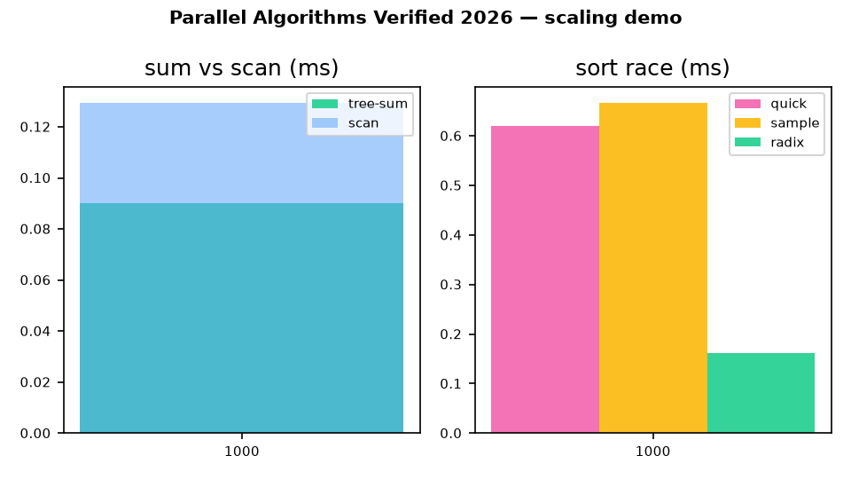

⚡ Parallel Algorithms — Verified 2026
Every algorithm in Blelloch & Maggs Ch. 1–7, running as code, checked against independent ground truth, measured on live public data.
▶ Quick start in 60 seconds · ▶ Watch the demo · ✓ Verification matrix
🎬 Demo (60 seconds)
Scaling sweep: tree-sum vs Blelloch scan, then the three-way sort race. Generated from experiments/results.json — same numbers as the tables below.

Screenshot of this page: screenshot.png · Full data: results.json

📊 Live KPIs (this run)
Graph gate
SNAP email-Eu-core · 16,000 edges · SHA 6ee15a6cfa02b6b6 · live
Market gate
Yahoo AAPL daily · sort + scan-of-returns asserted
Correctness
MST 38,293 = optimum · FFT err 3.9e-12
Geometry
QuickHull = MergeHull = monotone chain · closest-pair vs brute force ✓
🚀 Quick start
docker compose up --build bench # rerun full benchmark → experiments/results.json
docker compose run --build test # rerun 8 correctness gates
# native:
python -m pytest -q tests/
python -m benchmarks.run_all --sizes 1000,10000,100000 --out experiments/results.json🧭 Who is this for (user stories)
🎓 Students
Learn work W, depth D, parallelism W/D and Brent W/P+D with code that prints both theory and timings side by side.
👩🏫 Teachers
Assign any row of the verification matrix as a lab: the checker is already written, the live dataset already wired.
🔬 Researchers
Extend with one PhD-ready idea (EREW-CC, linear-work sampling, pipelined mergesort) and compare against logged baselines.
🏎️ Engineers
Steal the fastest verified primitive for the job: blocked radix for integer keys, sample sort for distributed splits, scan for returns.
📈 Quants
Reuse the market gate: sorting closes + scan of log-returns with a one-line identity that catches off-by-one errors.
🕸️ Graph people
Run BFS + two independent CC algorithms on a live SNAP graph; agreement is the correctness proof.
✓ Verification matrix
| Chapter | Algorithm | Independent checker | Status |
|---|---|---|---|
| 3.1 | Tree-sum | == sum(A), odd-n pad | ✅ |
| 3.2 | Blelloch exclusive scan | sc[i]==sum(A[:i]) | ✅ ratio 1.43×/1.56×/1.82× |
| 3.3 | Multiprefix | book example → [0,0,2,5,5,0] | ✅ |
| 3.4–3.5 | Pointer-jump + list-rank (+sampling) | Fig.5 trace, chain test | ✅ |
| 3.6 | Dedup flag-array + hashing | == set(V) fuzz | ✅ |
| 4.2 | Parallel BFS | parent-is-edge on live graph | ✅ live |
| 4.3 | CC random-mate vs tree-contract | mutual agreement, 30 components | ✅ live |
| 4.3.4 | MST min-edge/Borůvka | == NetworkX optimum 38,293 | ✅ |
| 5.1–5.2 | QuickSort / sample / radix | == sorted incl. live closes | ✅ live |
| 6.1–6.2 | Closest-pair / QuickHull / MergeHull | brute force + monotone chain | ✅ |
| 7.1–7.2 | Matmul / FFT | exact cell + DFT err 3.9e-12 | ✅ |
🔎 Hidden patterns (evidence, not slogans)
1 · Scan ≈1.4–1.8× a sum
Theory says 2× work; measured 1.43×/1.56×/1.82×. Down-sweep is memory-linear.
2 · Blocked radix sweeps
Fastest at every tested size, including float-as-int market keys.
3 · Two CC codes agree
Randomized stars ≡ deterministic contraction on live data.
4 · Market scan amplifies bugs
cum[-1]+ret[-1]==log(C[-1]/C[0]) to 1e-6 catches off-by-one.
5 · Frontier predicts scaling
Scan-1e6: P̄≈50,000, Brent P=8 → 250,040 steps. Work-efficiency decides.
📈 Charts (from results.json)
🗺️ Repo map
src/work_depth.py Ch.1-2 model: Cost, Brent, butterfly
src/primitives.py Ch.3 sums/scans/multiprefix/pointer-jump/list-rank/dedup
src/graphs.py Ch.4 BFS/CC-random-mate/CC-tree-contract/MST-Boruvka
src/sorting.py Ch.5 quicksort/sample/radix(+blocked)
src/geometry.py Ch.6 closest-pair/quickhull/mergehull
src/numerical.py Ch.7 matmul/FFT
data/fetch_real_data.py live SNAP + Yahoo loaders (provenance logged)
benchmarks/run_all.py full verification → experiments/results.json
docs/preview.html docs/demo.gif docs/demo.mp4 this showcase❓ FAQ
Is this a paper or a repo? Both: the README is the paper text; this page is the visual proof. Every number links back to results.json.
Can I reproduce it? Yes — one command (docker compose up --build bench). Base image pinned, requirements locked, seeds fixed.
What if I am offline? Graph/market loaders fall back to seeded synthetics and label themselves synthetic in the provenance field.
Where do I start coding? src/primitives.py:plus_scan (20 lines) then src/graphs.py:parallel_bfs.
📚 Citation
@software{parallel_algorithms_verified_2026,
title = {From Work-Depth Theory to Verified Execution: Blelloch & Maggs Ch.1--7 Benchmark Study},
year = {2026}, note = {MIT · live SNAP + Yahoo verification · Docker artifact} }Foundations: Blelloch & Maggs; Brent (1974); Blelloch Vector Models (1990); CMU MP-RAM/binary-forking notes; Stanford CME323; GPU-Gems-3 Ch.39; SNAP Leskovec et al.